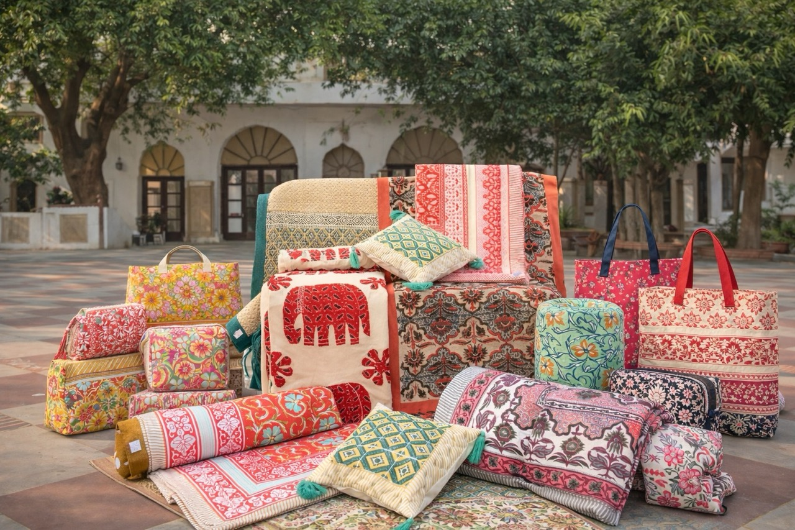
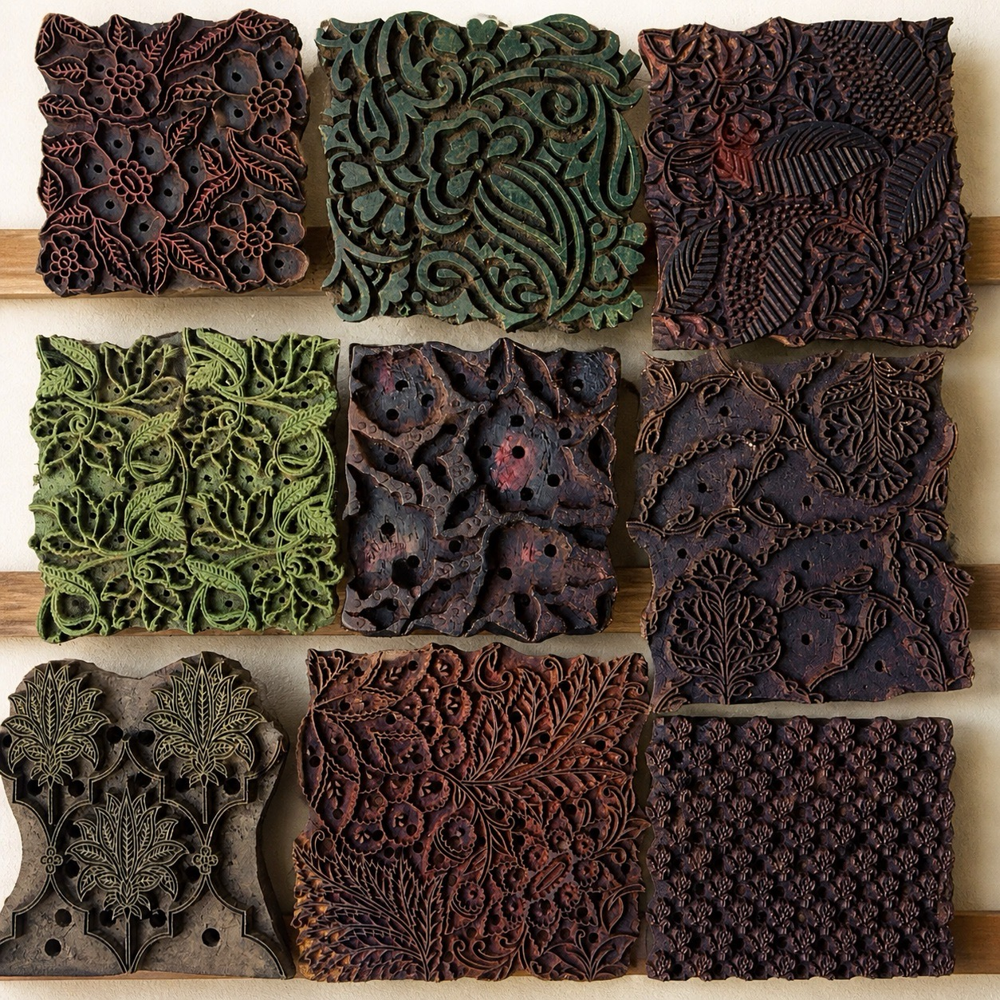

From the Journal
Read notes on process, materiality, and the slower decisions behind the textiles we make.

Fabric, Material & Performance
Fabric selection is where every PEXX product begins. We work with natural, non-synthetic cotton fabrics chosen for softness, breathability, and long-term comfort.

Custom Development & Design Support
Development at PEXX is collaborative. From Pantone-aligned colour work to motif adaptation and sampling, we support buyers through thoughtful, flexible development cycles.

Integrated Production & Quality Control
Our integrated setup allows quality to be monitored across printing, washing, stitching, and finishing, supporting consistency and scale without compromise.

Export Readiness
Finished goods are prepared as retail-ready products, supported by coordinated packaging, labelling, and export documentation aligned to buyer expectations.

Responsible Practices
We use azo-free, skin-friendly dyes and disciplined water management practices, prioritising colour longevity and product durability.
Work with PEXX
Contact
For general enquiries, collaborations, or to learn more about our work, feel free to reach out.
Email usBulk & Trade
For bulk orders, custom development, or long-term partnerships, connect with our export team.
Bulk enquiryVisit Us & Print Workshops
Experience the craft of hand block printing through guided workshops held at our factory. These sessions offer an opportunity to engage closely with materials, tools, and techniques that have shaped our textiles for decades.
Workshops are designed for individuals, small groups, and design-led visits seeking a deeper understanding of the process.
Explore workshops